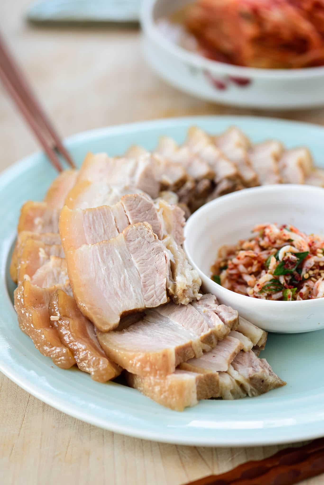

Bossam Recipe

Description:
Bossam (보쌈) is a boiled pork dish. The meat is boiled in a flavorful brine until tender and served thinly sliced. At the table, each person wraps the meat in salted napa cabbage leaves along with radish salad (musaengchae/muchae) and salted shrimp. Salted napa cabbage is traditional, but lettuce and/or perilla leaves are also common.
Ingredients
For the Meat:
- 2 whole fresh pork belly about 3-inch wide cut about 2.5 pounds
- 1/2 medium onion
- 2 - 3 white parts of large scallions
- 7 - 8 plump garlic cloves
- 1 inch ginger piece, sliced
- 1 teaspoon whole black peppers
- 1-1/2 tablespoons doenjang, fermented soybean paste
- 1 teaspoon instant coffee, or a cup of brewed coffee or a small bottle (or can) of beer - 12 ounces
- 1 teaspoon salt
- 2 bay leaves
- 7 to 8 cups water (see note) if using brewed coffee or beer, reduce the amount of water by the equal amount
- tender inner parts of 1 napa cabbage salted* (or red or green leaf lettuce)
- * Dissolve 1/2 cup coarse salt in 4 cups of water, and soak the cabbage leaves until softened, 2 to 4 hours. Rinse and drain well.
- Radish salad, musaengchae - See recipe.
- saewujeot (salted shrimp) use it as is or mix with a little bit of gochugaru, sesame oil and seeds, and chopped scallion
Steps
- In a pot, bring water and all the brine ingredients to a boil over medium high heat, and continue to boil for 5 minutes.
- Add the pork belly, bring it to a boil. and boil for about 5 minutes, uncovered. Reduce the heat to medium, and cook, covered, until the meat is very tender, 45 to 50 minutes. Cut a small slice and try if tender at 40 minute point before cooking longer. Turn the heat off, and cool the meat in the cooking liquid. This will keep the meat moist.
- Thinly slice the meat and serve with the salted cabbage (or lettuce), saewujeot, and musaengchae.